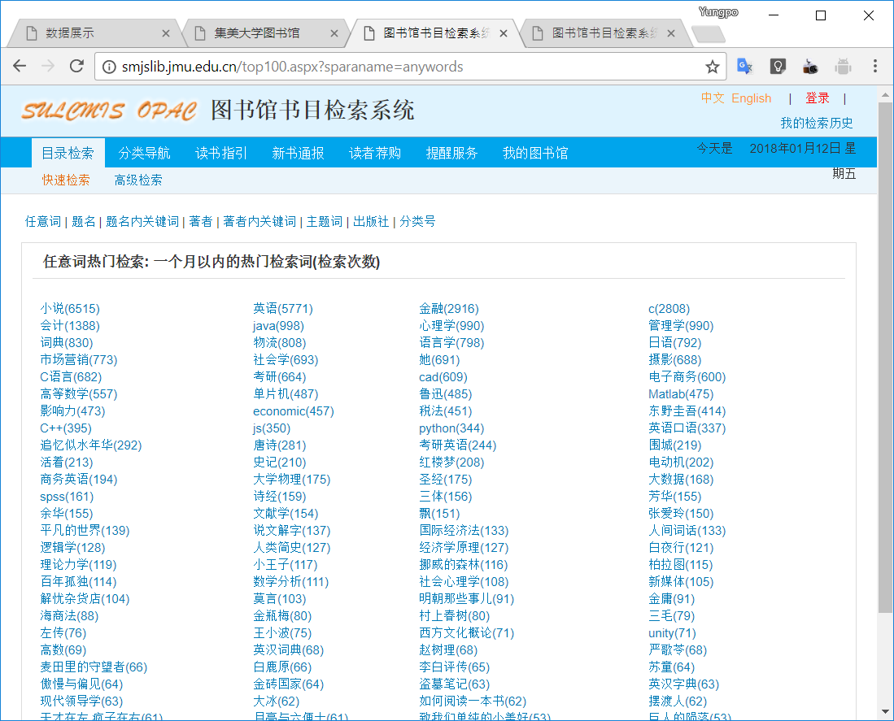
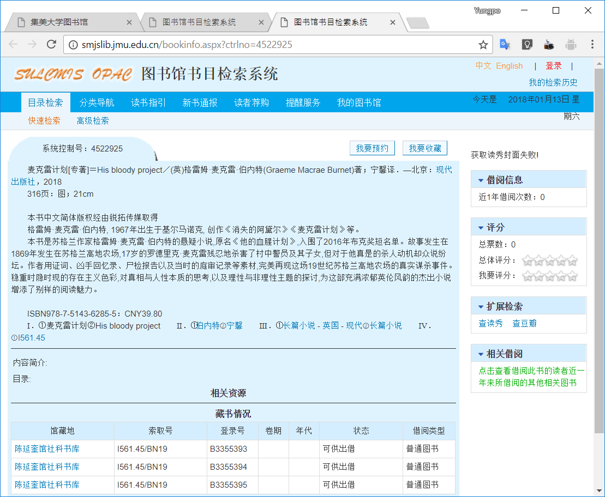
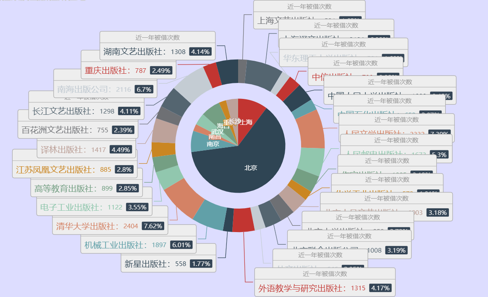

1. 项目综述
1.1. 项目来源和意义
书籍是人进步的阶梯，为此我们决定对这个阶梯做一个分析，能够直观看出对人们有影响力的书籍相关信息。通过去网上爬取书籍相关信息来进行可视化分析，从而能够对书籍的有关因素做一个了解。
1.2. 预期目标
通过技术手段获取相关的图书信息，然后可视化分析，使得对人们对于书籍的偏好因素有一个了解。
1.3. 解决问题
- 图书馆热搜关键词搜索到的结果爬取。
- 对图书馆爬取的数据进行可视化分析。
1.4. 面对的问题
图书馆书籍信息是静态信息，较为难以获取，需要观察特征来获取，并对信息不全的书籍进行排除。
2. 需求分析
2.1. 用户需求
通过网页对于图书馆的热门书籍的特征可以直观看出相应的特点。
2.2. 总体方案
将信息解析，处理出有效信息，存储到数据库。其中涉及到如何爬取书籍信息，如何进行分页的爬取。
2.3. 爬取过程的解析流程
3. 代码编写
3.1. 图书馆热词搜索信息爬取
本代码为图书馆热词搜索结果的信息爬取，其中涉及到了热搜关键词页面关键词所搜结果链接的爬取，关键词搜索结果分页链接爬取，书籍信息的爬取。
3.1.1. 热搜关键词页面关键词所搜结果链接的爬取

如图3-1-1所示，一个月以内的热门检索词的链接就是我们抓取的内容，用于访问下一级的所有结果
在Scrapy的项目目录下，建立资源爬虫类BooksSpider
并定义start_urls属性和parse函数
class BooksSpider(scrapy.Spider): name = 'books' allowed_domains = ['smjslib.jmu.edu.cn'] #定义要爬取的网址入口 start_urls = ['http://smjslib.jmu.edu.cn/top100.aspx?sparaname=anywords'] #将这100个搜索热词的搜索结果进行爬取 def parse(self, response): for href in response.css('td a::attr(href)'): #用paese_books_pages解析搜索结果的分页 yield response.follow(href, parse_books_pages)
其中
td a::attr(href)是根据浏览器的自带工具获取的css定位，能定位到所有的热门检索关键词
·start_urls = ['http://smjslib.jmu.edu.cn/top100.aspx?sparaname=anywords']·
用于定义要爬取的网址入口
·yield response.follow(href, parse_books_pages)·
用于解析搜索结果的分页
3.1.2. 关键词搜索结果分页链接爬取

如图3-1-2所示，我们要爬取的是总页数，需要定义一个parse_books_pages来获取每一页的链接，并进行解析内容。
#获取该热词的搜索结果总页数，进行该热词每一页的爬取 def parse_books_pages(response): pages = len(response.css('#ctl00_ContentPlaceHolder1_gotoddlfl1 > option')) anywords = response.xpath('//*[@id="ctl00_ContentPlaceHolder1_conditionlbl"]/font/text()').extract()[0] body = {'anywords': anywords, 'dt': 'ALL', 'cl': 'ALL', 'dp': '20', 'sf': 'M_PUB_YEAR', 'ob': 'DESC', 'sm': 'table', 'dept': 'ALL'} for page in range(1, pages + 1): body['page'] = page url = 'http://smjslib.jmu.edu.cn/searchresult.aspx?{}'.format(urlencode(body, encoding='gb2312')) yield scrapy.Request(url, parse_books_url)
其中，通过浏览器的内置工具，可以找到总页数的css是'#ctl00_ContentPlaceHolder1_gotoddlfl1 > option',这样可以得知总页数为pages = len(response.css('#ctl00_ContentPlaceHolder1_gotoddlfl1 > option'))
同理获得检索的关键词anywords = response.xpath('//*[@id="ctl00_ContentPlaceHolder1_conditionlbl"]/font/text()').extract()[0]
有了检索的关键词anywords和总页数pages就能构造出每一页的链接，并进行请求和解析，以爬取下一级内同。
3.1.3. 每页书籍信链接的息获取
通过构造每页的链接来对改链接下书籍信息的链接进行爬取，并进行解析。
需要构造一个parse_books_url函数来对书籍的链接进行获取。
#将该页中的书本信息进行爬取解析 def parse_books_url(response): for href in response.css('td span.title a::attr(href)'): yield response.follow(href, parse_books_imformation)
'td span.title a::attr(href)'是通过浏览器工具获取的css坐标下，获取的链接，通过yield response.follow(href, parse_books_imformation)对书籍页面进行解析。
3.1.4. 书籍信息的获取

如图3-1-4所示，可以看到很多书籍的关键信息，有标题信息，作者信息，出版信息等。
这样可以定义一个parse_books_imformation函数进行对图书信息的解析获取。
#爬取解析每一页的关键信息 def parse_books_imformation(response): book_info = response.css('#ctl00_ContentPlaceHolder1_bookcardinfolbl').xpath('string(.)').extract()[0].split( '\u3000') book_info = list(filter(lambda item: item, book_info)) title_author_publishment = re.split('／|．—', book_info[0]) #标题 title = title_author_publishment[0] #作者 author = title_author_publishment[1] publishment = title_author_publishment[-1].split('；')[0] #出版城市 publisher_city, publisher, publish_year = re.split('：|，', publishment) #出版年份 publish_year = re.search(r'\d{4}', publish_year).group() pages_length = re.split('；', book_info[1]) pages = re.findall('\d\d+', pages_length[0]) #总页数 pages = max(pages) #书籍长度 length = re.search('\d\d+', pages_length[1]).group() isbnandprice = str(book_info[-5]) #isbn码 isbn = isbnandprice.split('：')[0] isbn = re.search(r'ISBN[\w|-]+', isbn).group() #价格 price = isbnandprice.split('：')[1] price = re.search(r'\d+.?\d+', price).group() #相关标题 titles = str(book_info[-4]).split('．')[-1] titles = re.split(r'[①-⑳]', titles) titles.remove('') #相关作者 authors = str(book_info[-3]).split('．')[-1] authors = re.split(r'[①-⑳]', authors) authors = list(map(lambda author: author.strip(','), authors)) authors = list(filter(lambda author: author, authors)) #相关标签 tags = str(book_info[-2]).split('．')[-1] tags = re.split(r'[①-⑳]', tags) tags.remove('') tags = list(map(lambda taglist: re.split(' - |-', taglist), tags)) tags = sum(tags, []) tags = list(set(tags)) #索引码 association = response.xpath('//*[@id="bardiv"]/div/table/tbody/tr[1]/td[2]/text()').extract()[0].split('/')[0] association = re.search(r'\w+[.\w+]+[-\w+]+', association).group() #馆藏量用馆藏链接数量表示 total = len(response.xpath('//*[@id="bardiv"]/div/table/tbody/tr[*]/td[1]/a')) #借出量用借出链接数量表示 loan = len(response.xpath('//*[@id="bardiv"]/div/table/tbody/tr[*]/td[6]/a')) #近一年的借出数量 frequence = response.xpath('//*[@id="ctl00_ContentPlaceHolder1_blclbl"]/text()').extract()[0] item = SmjslibItem() if isbn and price and association: item['title'] = title item['author'] = author item['publisher_city'] = publisher_city item['publisher'] = publisher item['publish_year'] = publish_year item['pages'] = pages item['length'] = length item['isbn'] = isbn item['price'] = price item['titles'] = titles item['authors'] = authors item['tags'] = tags item['association'] = association item['total'] = total item['available'] = total - loan item['loan'] = loan item['frequence'] = frequence yield item
可以通过浏览器的工具获知，在css标签'#ctl00_ContentPlaceHolder1_bookcardinfolbl')下有很多信息，比如标题信息，作者信息，出版信息，书籍规格等，通过split,match,search等正则表达式和字符串有关的数据可以解析出需要的信息。
馆藏量可以通过馆藏链接的数量获取
total = len(response.xpath('//*[@id="bardiv"]/div/table/tbody/tr[*]/td[1]/a'))
借出量可以通过借出链接来获取
loan = len(response.xpath('//*[@id="bardiv"]/div/table/tbody/tr[*]/td[6]/a'))
通过简单运算就能计算出可借量
item['available'] = total - loan
3.1.5. 爬取的信息
以下是一条爬取信息的例子
{ "title": "英语口语教程·1，英语初级口语＝Oral workshop:reproduction", "author": "吴祯福主编；李又文等编写", "publisher_city": "北京", "publisher": "外语教学与研究出版社", "publish_year": "1993", "pages": "310", "length": "20", "isbn": "ISBN7-5600-0818-6", "price": "13.80", "titles": [ "英语口语教程", "Oral workshop:reproduction", "英语初级口语", "英语 口语" ], "authors": [ "吴祯福", "李又文" ], "tags": [ "教材", "英语", "口语" ], "association": "H319.9", "total": 7, "available": 7, "loan": 0, "frequence": "0" }
4. 程序调试
通过爬取地数据获得近一年来被借阅次数超过500次地所属出版社及其所在地

通过图4可以很直观地热门借阅的书籍所属的城市主要来源于北京、上海、南京，如果说书籍是人类进步的阶梯，那么北京、上海、南京可以说是推进人类进步的文化要地。